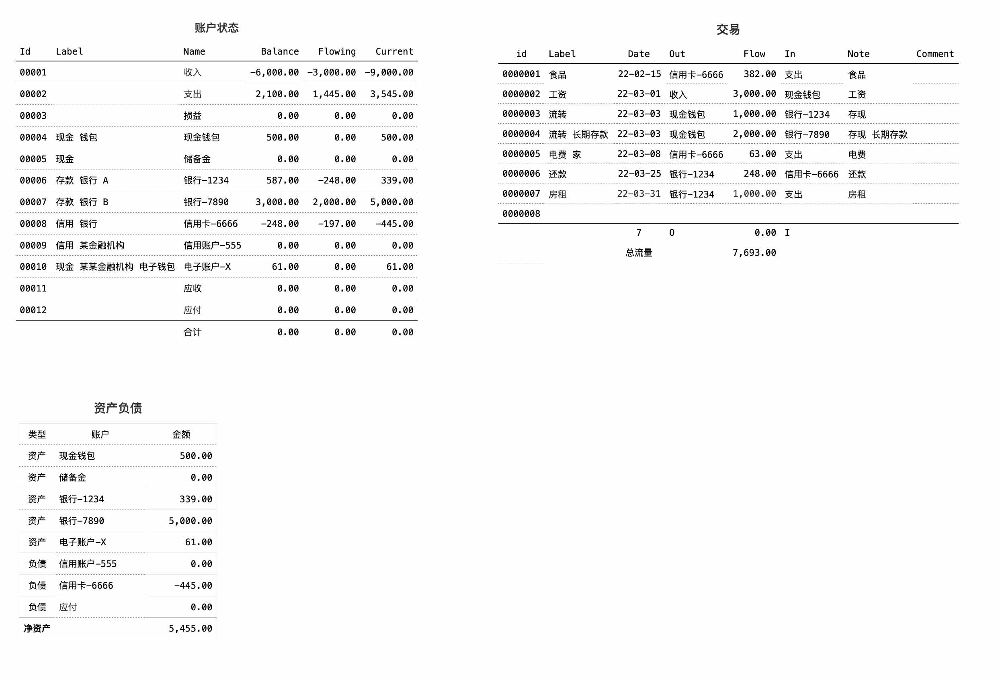

记账 思考
0. 我只使用 Numbers 大致记录交易, 然后导出csv, 再用自己的程序去处理.
简单的个人记账使用 Numbers 或 Excel 就可以满足, 可以把账户建的更加细化, 来方便汇总和统计.
1. 根据需求 创建账户

2. 拷贝账户初始余额到1月

3. 同理

4. 同理.

5. 看过会计相关的书, 但对个人使用太复杂, 复式记账的表现形式太啰嗦, 直接使用流式要简单的多, 不用去记忆借了贷了的, 左右位置已经表示了.
现在都计算机时代了, 除了手工输入核对每笔交易, 其他的完全用程序自动去处理就好, 只需要根据各自需要建立好规则.